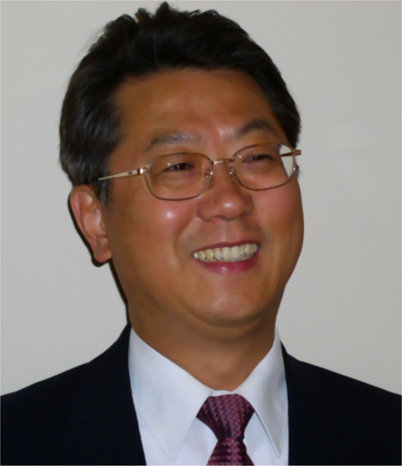

|
Chong H. Ahn |
-
Mitchell P. Kartalia Chair and Professor of Electrical Engineering
School of Electronics and Computing Systems
College of Engineering and Applied Science
University of Cincinnati
-
Director
MicroSystems and BioMEMS Lab
Center for BioMEMS and Nanobiosciences
Department of Biomedical Engineering
University of Cincinnati
Cincinnati, Ohio 45221-0030
-
Tel: (513) 556-4767
Fax: (513) 556-7326
-
E-mail :chong.ahn@uc.edu
-
Web-page: http://www.biomems.uc.edu
|
|
Education |
- Inha University, S. Korea Electrical Engineering B.S., 1980
- Seoul National University, S. Korea Electrical Engineering M.S., 1983
- Georgia Institute of Technology, GA Electrical and Computer Eng. Ph.D., 1993
|
|
Professional Experience |
- May. 2010 - Present:
Michell P. Kartalia Chair and Professor of Electrical Engineering, University of Cincinnati
- Dec. 2004 - Present:
Director, Center for BioMEMS and Nanobiosystems, University of Cincinnati
- Nov. 2002 – Present:
Professor, Department of Biomedical Engineering (Secondary), University of Cincinnati, Cincinnati, Ohio
- Sept. 2001 - Present:
Professor, Director, Microsystems and BioMEMS Lab Department of Electrical & Computer Engineering and Computer Science, University of Cincinnati, Cincinnati, Ohio.
- Sept.1998 - Aug. 2001:
Associate Professor, Department of Electrical & Computer Engineering and Computer Science. University of Cincinnati, Cincinnati, Ohio.
- Oct. 1994 - Aug. 1998:
Assistant Professor, Associate Director, Center for Microelectronic Sensors and MEMS (CMSM), Department of Electrical & Computer Engineering and Computer Science. University of Cincinnati, Cincinnati, Ohio.
- June. 1993 - Oct. 1994:
Post Doctoral Associate (Advisor: Dr. Luby Romankiw, IBM Fellow), Center for Electrochemical Technology and Microfabrication (CETAM), IBM T. J. Watson Research Center, New York/ Post Doctoral Associate (Advisor: Prof. Mark G. Allen), Georgia Institute of Technology, Atlanta, GA.
|
| Editor or Editorial Board |
- Editor (2006-Present)
- IEEE/ASME Journal of Microelectromechanical Systems (MEMS)
- Editorial Board (2003-Present)
- Nano/Micro Small
- Journal of Micromechanics and Microengineering (JMM)
- Journal of Microfluidics and Nanofluidics
- Associate Editor
(2003-2005)
|
|
Awards and Honors |
- Established Entrepreneur Faculty Achievement Award of UC (2011)
- The Best Journal Paper Award of The IEEE Sensors Journal (2009)
- Emerging Entrepreneur Faculty Achievement Award of UC (2008)
- Appointed and honored as "Distinguished Engineering Researcher", College of Engineeing, University of Cincinnati (2006)
- Fellow, The Institute of Physics (2004)
- NASA Group Achievement Award, NASA, Glennan Microsystems Initiative Technical Team, UC (2004)
- Scientific Leadership Award, 4th Annual BioMEMS and Biomedical Nanotechnology WORLD (2003)
- 1st Tutorial Lecturer for Magnetic MEMS, IEEE Magnetic Society, INTERMAG (2001)
- Honor Roll Professor, College of Engineering Tribunal, University of Cincinnati (2000).
- 2nd Best Paper Award (out of 400 conference papers) from 13th European Conference on Solid-State Transducers, The Hageue, The Netherlands (1999).
- Research Award, College of Engineering (CoE), University of Cincinnati (1998).
- Middendorf Research Excellent Award' 98, Department of ECECS, University of Cincinnati (1998).
|
|
Research Interests |
Development and characterization of magnetic MEMS and BioMEMS, which includes magnetic sensors, magnetic biofilters, biochemical detection cell, microfluidic devices, disposable smart plastic lab-on-a-chips, protein chips, and point-of-care testing systems, with relevant biochemical transduction mechanisms.
|
|
Patent Applications |
- C. H. Ahn, et.al, ¡°Smart Disposable Plastic Lab-on-a-Chip for Point-of-Care Testing¡±, U.S. patent 7524464, issued March, 2009.
- C. H. Ahn, et. al., ¡°On-chip Sample Preparation for Whole Blood Analysis¡± US patent 7476326, issued April, 2009.
- C. H. Ahn, D. J. Sadler, W. Zhang, "Electromagnetically Driven Microactuated Device and Method of Making The Same," U.S. Patent, 6116863, Issued 9/12/2000.
- Chong H. Ahn and Mark Allen, "A Fully Integrated Magnetic Micromotor and Methods for Their Fabrication," U.S. Patent # 5710466, Issued by 01/20/1998.
- Chong H. Ahn and Mark Allen, "A Fully Integrated Micromachined Magnetic Particle Manipulator and Separator," U.S. Patent # 5655665, Issued by 8/12/1997.
- 9 US patent pending.
|
|
Publications (Selective Recent Publications) |
- W. Jung, A. Jang, P.L. Bishop, C.H. Ahn, ¡°A polymer lab chip sensor with microfabricated planar silver electrode for continuous and on-site heavy metal measurement¡±, Sensors and Actuators, B: Chemical, Article in Press, 2010.
- A. Jang, Z. Zou, K.K. Lee, C.H. Ahn, P.L. Bishop, ¡°Potentiometric and voltammetric polymer lab chip sensors for determination of nitrate, pH and Cd(II) in water¡±, Talanta, Vol. 83, pp. 1-8, 2010.
- J.S. Shim, A.W. Browne, C.H. Ahn, ¡°An on-chip whole blood/plasma separator with bead-packed microchannel on COC polymer¡±, Biomedical Microdevices, Vol. 12, pp. 949-957, 2010.
- J.S. Shim, Y.H. Yun, W. Cho, V. Shanov, M.J. Schulz, C.H. Ahn, ¡°Self-aligned nanogaps on multilayer electrodes for fluidic and magnetic assembly of carbon nanotubes¡±, Langmuir, Vol. 26, pp. 11642-11647, 2010.
- C. Li, L.A. Shutter, P.M. Wu, C.H. Ahn, R.K. Narayan, ¡°Potential of a simple lab-on-a-tube for point-of-care measurements of multiple analytes¡±, Lab on a Chip, Vol. 10, pp. 1476-1479, 2010.
- M.J. Rust, C.H. Ahn, ¡°Nanoparticle assemblies on nanoinjection-molded polymer templates¡±, IEEE Transactions on Nanotechnology, Vol. 9, pp. 93-98, 2010.
- C.A. Currie, J.S. Shim, S.H. Lee, C.H. Ahn, P.A. Limbach, H.B. Halsall, W.R. Heineman, ¡°Comparing polyelectrolyte multilayer-coated PMMA microfluidic devices and glass microchips for electrophoretic separations¡±, Electrophoresis, Vol. 30, pp. 4245-4250, 2009.
- Jang, Z. Zou, E. MacKnight, P. M. Wu, I. S. Kim, C. H. Ahn and P. L. Bishop, "Development of a portable analyzer with polymer lab-on-a-chip (LOC) for continuous sampling and monitoring of Pb(II)," Water Science & Technology, vol. 60, pp. 2889-2896, 2009
- M. D. Estes, B. Ouyang, S.-M. Ho, C. H. Ahn, "Isolation of prostate cancer cell subpopulations of functional interest by use of an on-chip magnetic bead-based cell separator," Journal of Micromechanics and Microengineering 19 (9), art. no. 095015, 2009
- Jang, Z. Zou, E. MacKnight, P. M. Wu, I. S. Kim, C. H. Ahn and P. L. Bishop, "Development of a portable analyzer with polymer lab-on-a-chip (LOC) for continuous sampling and monitoring of Pb(II)," Water Science & Technology, vol. 60, pp. 2889-2896, 2009
- J. Wang, B. Hong, J. Kai, J. Han, Z. Zou, C. H. Ahn, K.A. Kang,"Mini sensing chip for point-of-care acute myocardial infarction diagnosis utilizing micro-electro-mechanical system and nano-technology," Advances in experimental medicine and biology 645, pp. 101-107, 2009
- W. Browne, K. E. Hitchcock, C. H. Ahn, "A PDMS pinch-valve module embedded in rigid polymer lab chips for on-chip flow regulation," Journal of Micromechanics and Microengineering 19 (11), art. no. 115012, 2009
- Z. Zou, J. Kai,C. H. Ahn, "Electrical characterization of suspended gold nanowire bridges with functionalized self-assembled monolayers using a top-down fabrication method," Journal of Micromechanics and Microengineering 19 (5), art. no. 055002, 2009
- Y.-H. Yun, E. Eteshola, A. Bhattacharya, Z. Dong, J. S. Shim, L. Conforti, D. Kim, M. J. Schulz, C. H. Ahn , N. Watts, "Tiny medicine: Nanomaterial-based biosensors," Sensors 9 (11), pp. 9275-9299, 2009
- M. J. Rust and C. H. Ahn, "Nanoparticle Assemblies on Nanoinjection Molded Polymer Templates," IEEE Transactions on Nanotechnology, 2009
- C. Li, C. H. Ahn, L. A. Shutter and R. K. Narayan "Toward real-time continuous brain glucose and oxygen monitoring with a smart catheter," Biosensors and Bioelectronics 25 (1), pp. 173-178, 2009
- J. S. Shim, Y. Yun, M. J Rust, J. Do, V. Shanov, M. J. Schulz, and C. H. Ahn, "The precise self-assembly of individual carbon nanotube using magnetic capturing and fluidic alignment," Nanotechnology, vol. 20, pp. 325607-325613, 2009.
- C. Li, P.-M. Wu, W. Jung, C. H. Ahn, L. A. Shutter and R. K. Narayan, "A novel lab-on-a-tube for multimodality neuromonitoring of patients with traumatic brain injury (TBI)", Lab Chip, Vol. 9, pp. 1988-1990, 2009.
- A. W. Browne, M. J. Rust, W. Jung, S. H. Lee and C. H. Ahn, "A rapid prototyping method for polymer microfluidics with fixed aspect ratio and 3D tapered channels", Lab Chip, 2009.
- M. D. Estes, J. Do, and C.H. Ahn, "On-chip cell separator using magnetic bead-based enrichment and depletion of various cell surface markers," Biomedical Microdevices, 10.1007/s10544-008-9257-5.
- Z. Zou, A. Jang, E. MacKnight, P.-M. Wu, J. Do, J. Shim, P.L. Bishop, and C.H. Ahn, "An on-site heavy metal analyzer with polymer lab-on-a-chips for continuous sampling and monitoring," IEEE Sensors Journal, 2009.
|
|
Synergistic Activities |
- Editor, IEEE Journal of Microelectromechanical Systems (MEMS), 2006-Present.
- Advisory Editorial Board, Journal of Microfluidics and Nanofluidics, 2003-Present.
- Advisory Editorial Board, Journal Small, 2004 –2009.
- Editorial Board, Journal of Micromechanics and Microengineering (JMM), 1999 – Present.
- Associate Editor, IEEE Sensors Journal, 2002 - 2004.
- Guest Editor, Journal of Biomedical Microdevices, Special Issue on "Microfluidics and Lab-on-a-chip," Vol. 3, 2001.
- Organizer, ASME MEMS Workshop, "Microfluidics and Lab-on-a-chip Workshop," 2002, 2003.
- Co-Chairperson, Knowledge Foundations, "BioMEMS Workshop," 2001, 2002, 2003
- Technical Program Committee, IEEE International MEMS Conference, 2001, 2003.
- Technical Program Committee, Transducers Conference, 2005, 2007, 2009
- Program Committee, IEEE Nano Conference, 2006
|
|
Collaborators Other Than Those Being Cited |
- Michael G. Bissell, Jae Lee (OSU), J.B. Lee (UT Dallas), Joe. Nevin, Gregory. Beaucage, Bill Heineman, Brian Halsall, Pat Limbark, Carl Seliskar, Ian Papautsky (UC), Ken Wehmeyer (P&G), S. Krishnamoorthy (CFD-RC), Ken Kozack (Meridian Biosciences), Brian Gibler (MD, UC), Edward Jauch (MD, UC), Joseph Clark (UC), Thimothy Cripe (MD, CCHMC), Richard Azizkhan (MD, CCHMC), Sung W. Kim (Harvard Univ.)
|
|
Graduate Students and Post-Doctoral Students |
- Post-Doctoral Fellows:
Dr. Shekhar Bhansali (1998-2000), Dr. S. M. Lee (1999-2000), Dr. Jin-Woo Choi (2001-2002), Dr. Sanghyo Kim (2001-2002), and Dr. Young-Soo Sohn (2001-2002)
- Ph. D. STUDENTS:
Trifon M. Liakopolous (1995-2000), Daniel J. Sadler (1996-2001), Jin Woo Choi (1996-2001), Kwang Wook Oh (1996-2001), Hyoung Jin Cho (1997-2002), Aniruddha Puntambekar (1998-2003), Chien-Chong Hong (1998-2004), Xiaoshan Zhu (2000-2005), Chuan Gao (2000-2005), Jungyoup Han (2001-2006), Junhai Kai (2001-2006), Japhil Do (2001-2006), Sehwan Lee (2001-), Clayton Sippola (2001-2006), Rong Rong (2000-2007), Sehwan Lee (2001-2007), Mike Rust (2003-2009), Peming Wu (2003-2009), Zhuzwei Zho (2003-2009), Matt Estes (2004 -2009), Andrew Browun (2005-2009),Junseop Shim (2005-2010), Wooseok Jung (2008-), Zhizhen Wu (2010-).
- MASTER STUDENTS:
Wenjin Zhang (1994-1996), Ming Xu (1995-1998), Kurt Kramer (1996-1999), Jeffrey Cropp (1996-1999), Arum Han (1997-2000), Srinivasan Iyengar (1997-1999), Shomir Banejee (1999-2002), Ramachandran Trichur (2000-2001), Sreeram Appasamy (2000-2002), Jaephil Do (2001-2003), Se Hwan Lee (2001-2003), Chunyan Li (2001-2003), Phalgun Mynemi (2002-2005), Alok Jani (2002-2005), Ashwin Kumar Samarao (2004-2006), Nathaniel Hadlock (2004-2006), Eric MacKnight (2006-2008), Bharat Ram Ramaswamy (2010-)
|
|
Advisors |
- Ph.D. Advisor: Mark G. Allen, Ph.D., Dept. of Electrical and Computer Engineering, Georgia Institute of Technology, Atlanta
- Post-Doc Supervisor: Luby Romankiw, Ph. D, IBM Fellow, IBM T.J. Watson Research Center, NY
|